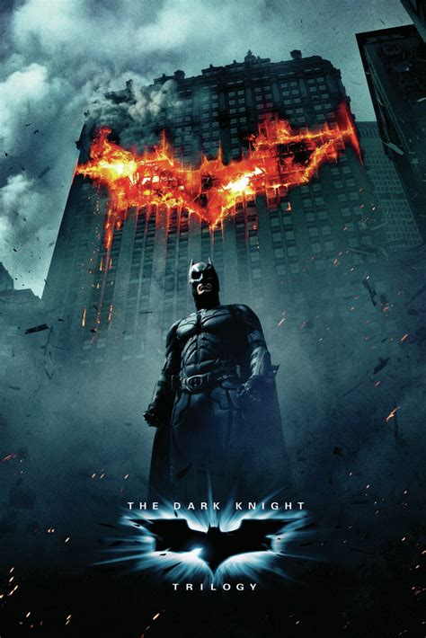

|
 |
The Dark Knight (2008)Directed by Christopher Nolan 152 min · Action, Crime, Drama, Thriller |
At a glance
| Official title | The Dark Knight |
|---|---|
| Release date | 18 July 2008 (United States) |
| Release year | 2008 |
| Original language | English |
| Country of production | United States, United Kingdom |
| Runtime | 152 minutes |
| Genre | Action, Crime, Drama, Thriller |
| Director | Christopher Nolan |
| Screenwriters | Jonathan Nolan, Christopher Nolan (screenplay); Christopher Nolan, David S. Goyer (story) |
| Production companies | Warner Bros. Pictures, Legendary Pictures, Syncopy, DC Comics |
Plot synopsis
Batman, Lieutenant James Gordon and new district attorney Harvey Dent set out to dismantle the organized crime networks that dominate Gotham City. Their campaign is disrupted by the arrival of the Joker, an unpredictable criminal who tests the city and forces Batman to question how far he is willing to go.
Main cast
- Christian Bale
- Heath Ledger
- Aaron Eckhart
- Michael Caine
- Maggie Gyllenhaal
- Gary Oldman
- Morgan Freeman
Awards and nominations
- Won 2 Academy Awards: Best Supporting Actor (Heath Ledger, posthumous) and Best Sound Editing.
- Received 8 Academy Award nominations in total.
Production facts
- Second film in Christopher Nolan's Batman trilogy, following Batman Begins (2005) and followed by The Dark Knight Rises (2012).
- Several sequences were filmed with IMAX cameras, a first for a major narrative feature.
- Heath Ledger died on January 22, 2008, before the film's release.
- Filming took place in Chicago, London and Hong Kong, among other locations.